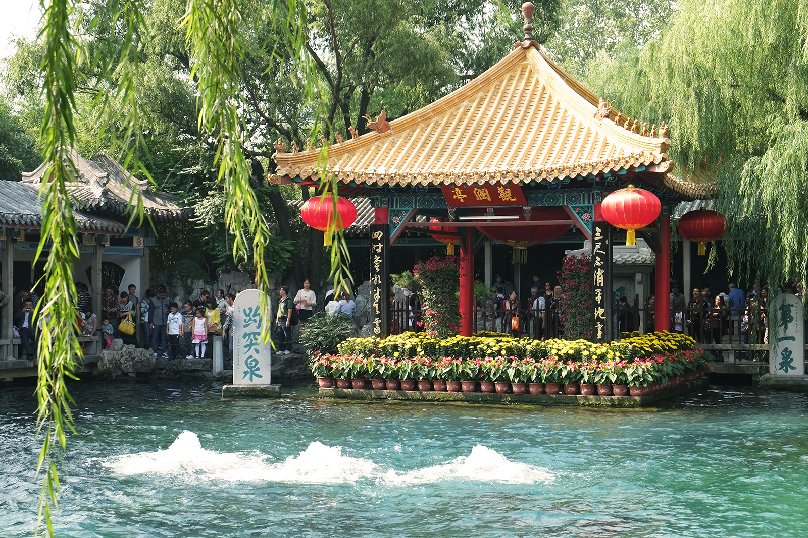
Jinan · Pearl of the Yellow River
Nourished by thousands of springs, Jinan is a living cultural heritage where nature meets modernity. With over 1,209 natural springs, it's the largest artesian spring system on Earth. The famous Baotu Spring has been celebrated for millennia. Jinan is also the capital of Shandong Province, a national historical and cultural city.
Springs
Population
Old town springs
Chronicles of an Ancient Capital
From Neolithic roots to a modern powerhouse — Jinan’s 4,500-year journey
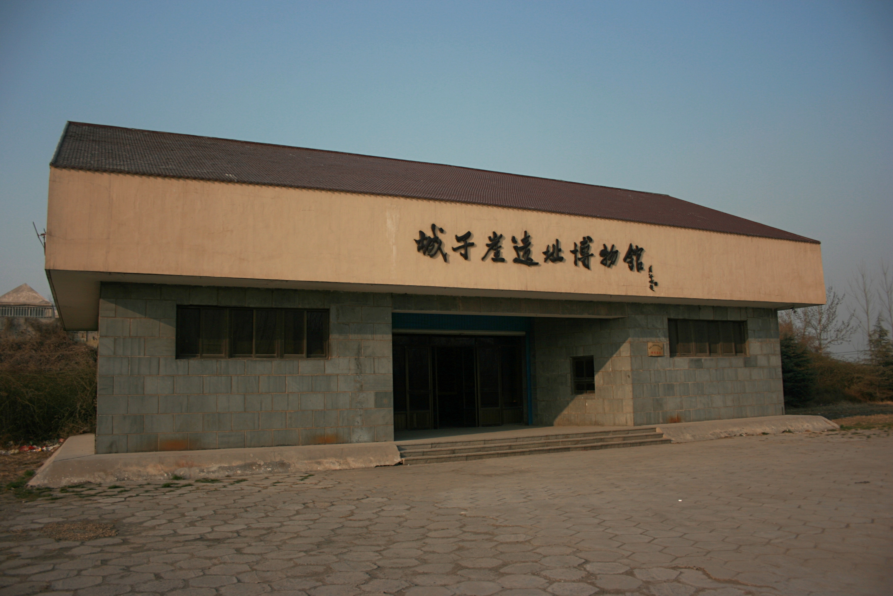
Cradle of Eastern Civilization
The Chengziya site revealed the earliest city walls and black pottery. Jinan became the capital of the State of Qi during the Warring States period, laying the foundation for Shandong’s cultural identity.
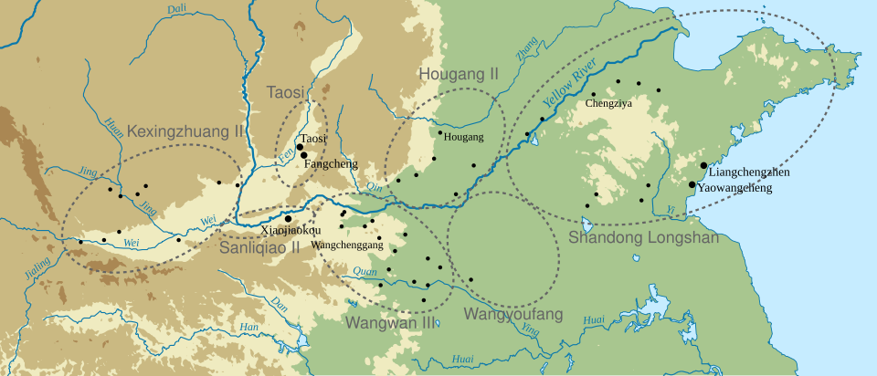
Springs & Imperial Grace
Emperor Qianlong named Baotu Spring "First Spring under Heaven". Jinan thrived along the Grand Canal, becoming a hub of poetry, commerce, and Buddhist art.
Modern Transition
Jinan pioneered China’s first autonomous treaty port, blending German railway heritage with local resilience. Today it’s a national central city and innovation hub.
Must-See Landscapes
Springs, lakes, and mountains — each corner unfolds a living painting
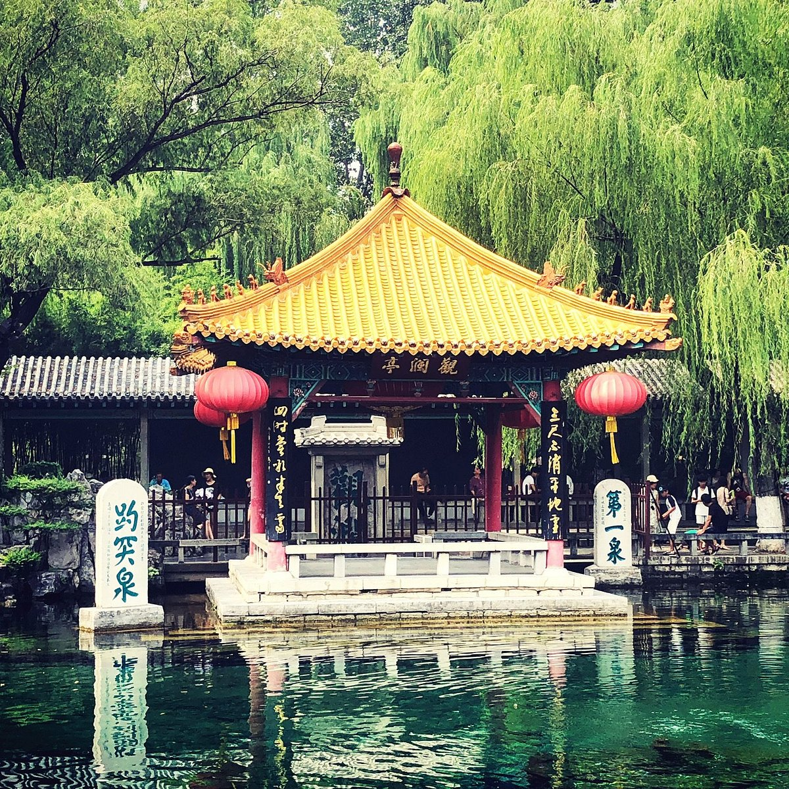
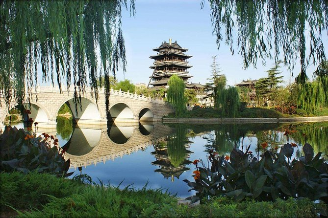
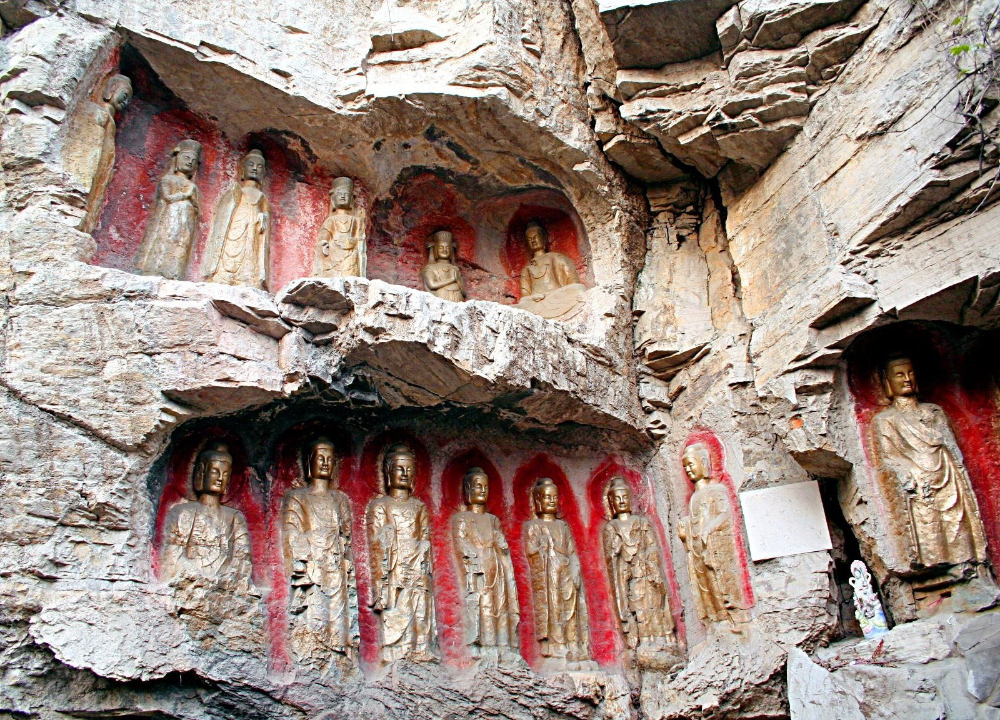
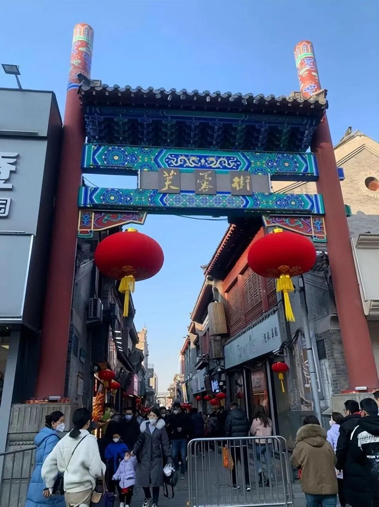
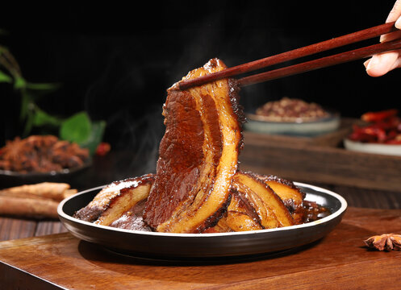
Ba Zi Rou
把子肉 · Braised Pork Belly
Youxuan
油旋 · Spiral Pastry
Tian Mo
甜沫 · Savory Millet Porridge
Jiu Zhuan Da Chang
九转大肠 · Nine-turn Intestine
Intangible Heritage · Living Traditions
The soul of Jinan beyond springs — folk arts, festivals, and timeless crafts
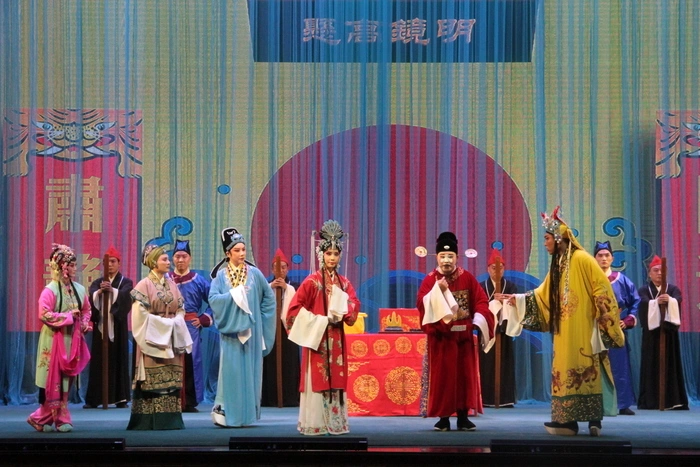
Lü Opera (Lüju)
Vibrant local opera with folk melodies, born in Jinan. National intangible heritage.

Spring Water Tea
Brewing tea with fresh spring water — a daily ritual unique to Jinan.
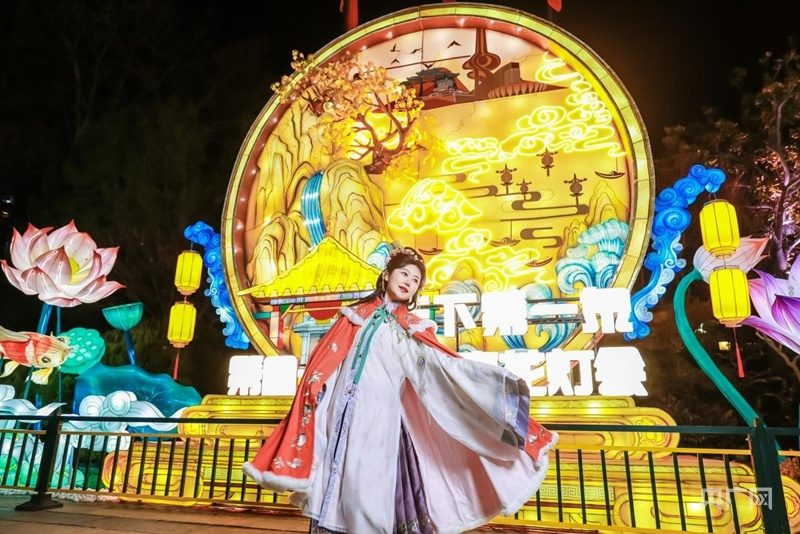
Lotus Lantern Festival
Floating lanterns on Daming Lake, a summer tradition of hope.
Modern Jinan · Gateway to the Future
As a national central city and core of the Yellow River economic belt, Jinan is home to China’s top advanced manufacturing and IT hubs. The Jinan Start Area and International Medical Science Center lead innovation in North China.
Fortune 500 HQs
Hi-tech firms
to Beijing
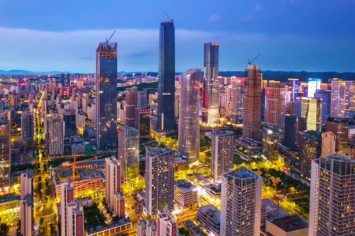